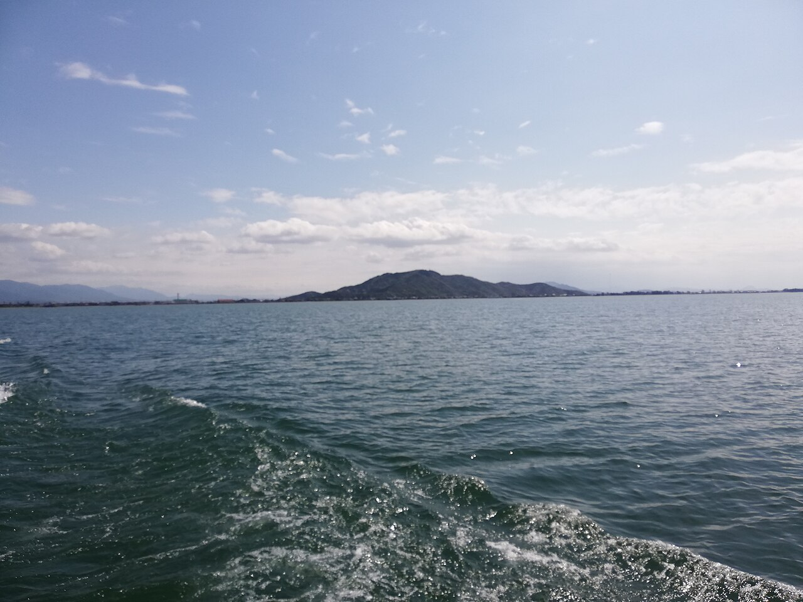

空間與設備
整棟出租，最多 10 人、3 間臥室。衛浴為 1 間浴室、1 間淋浴間及 2 間廁所；另有廚房、洗衣機與 Wi-Fi。

兩個家庭共 9 人入住。房源位於滋賀縣大津市，比叡山坂本站附近；房東標示從車站步行約 10 分鐘。
整棟出租，最多 10 人、3 間臥室。衛浴為 1 間浴室、1 間淋浴間及 2 間廁所；另有廚房、洗衣機與 Wi-Fi。
房源標示 2 個免費停車位。16:00 後入住、10:00 前退房，使用智慧門鎖自助入住。兩台租車的尺寸與停車方式仍需依房東指示確認。
房源由你提供並確認為本次住宿；設備與規則依 2026/10/4 房源頁整理。確切地址、門鎖操作與費用以訂單／房東訊息為準；未推定付款或取消條件。
以下航班為你們一家四口；起降時間均為各機場當地時間，台灣 UTC+8、日本 UTC+9。租車時間為日本當地時間。
09:20 桃園 TPE → 12:50 關西 KIX
飛行時間 2 小時 30 分鐘。入境與領取行李後前往京都，銜接 18:00 取車。
機場到京都搭 HARUKA，3 大 1 小；班次與票券待訂，預留入境及領行李時間。航廈、行李額度與票價待補，弟弟一家航班尚未提供。
14:00 關西 KIX → 16:20 桃園 TPE
飛行時間 3 小時 20 分鐘。APA 退房後，計畫從京都站搭 HARUKA 前往機場。
規劃約 09:00 離開 APA，步行到京都站抓 5–10 分鐘，另留進站找月台時間。目標搭約 09:20–09:45 的 HARUKA、約 11:00 前到 KIX。此為規劃時間範圍，尚非已確認的 2027 班次或已購車票；預計 3 大 1 小劃四人指定席。航廈、行李額度與票價待補。
查閱 JR 西日本官方資訊 ↗取車：1/25（一）18:00
還車：1/28（四）18:00
取還車均為「京都站七條堀川店」（截圖中的翻譯名稱）。預約期間為 3 天。
1/25 取車後再前往大津 Airbnb，當晚入住。1/28 先安排 MIMARU 與行李，再預留加油及還車時間。
租車費用 ¥38,940。已含雪胎、GPS、無限里程、1 位額外駕駛；滿油取車／滿油還車。雪具在雪場租借，車內不需載雪板。截圖的「已付款 NT$0」為付款狀態，不代表總價為零；實際付款方式與時間依訂單。
目前僅收到一台車的訂單。第二台車的車型、取還車時間與門市尚未確認，不將這張訂單套用到兩台車。
已提供車輛含雪胎與 1 位額外駕駛。租車公司、門市確切地址、兒童座椅、保險／NOC、ETC 及第二台配備仍待核對。車型為「Fit 或同級」，並非保證指定車款。
從 MIMARU 退房後返國。航班與前往機場的方式尚未提供，需另行確認。
請統一填入「你們一家四口負擔的金額」。兩家共用的住宿與租車，填入分攤後金額。
空白代表待補；0 代表已確認無支出。金額只在此瀏覽器保存，並非付款或訂位紀錄。已帶入自家租車 ¥38,940 與 APA 兩晚約 NT$9,079；APA 為約數，小計亦為估算。可按實際帳單或分攤修改。租車「已付款 NT$0」不代表總價為零。
| 項目 | 幣別 | 預算金額 |
|---|---|---|
| TWD | ||
| JPY | ||
| JPY | ||
| TWD | ||
| JPY | ||
| JPY | ||
| JPY | ||
| JPY | ||
| JPY |
尚未填寫金額
匯率為自行輸入，並非即時報價；小計不包含空白項目。
以下照片均由來源頁明確標示為 CC0 1.0 公眾領域提供，可自由使用；這裡仍保留作者與原始來源，方便查閱。
照片為歷年景點實景，並非這次旅程紀錄或即時雪況。未定案的景點不會因配圖而加入行程。
拍攝日期：2016-05-01。原檔；頁面依比例裁切顯示。
2016 年機場實景，非本次搭乘機型。
原始照片與授權頁 ↗ · CC0 1.0 ↗拍攝日期：2021-04-06。採用 Commons 1280px 縮圖；頁面依比例裁切顯示。
琵琶湖照片從彥根市八坂港外湖面望向荒神山，僅作滋賀區域配圖。
原始照片與授權頁 ↗ · CC0 1.0 ↗拍攝日期：2017-09-02。縮至 1440px 並壓縮；頁面依比例裁切顯示。
2017 年 9 月車站外觀，非住宿照片。
原始照片與授權頁 ↗ · CC0 1.0 ↗